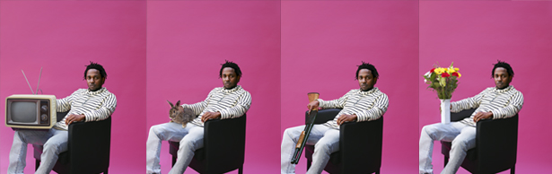

STEPHEN 'ESPO' POWERS
THE GRIM SLEEPER
KEHLANI
JESSICA PIMENTEL
HUDSON MOHAWKE
FRANKIE THA LUCKY DOG
CAMBODIAN CRATE-DIGGING
PUBLISHED ON APRIL 28, 2015 BY GABRIEL ALVAREZ. PHOTO BY CHRIS BUCK
Tomorrow is the 20th anniversary of the death of Eric “Eazy-E” Wright. And while “The Godfather of Gangsta Rap” will never be forgotten, today it’s time to pour out a little liquor for another iconic presence in the N.W.A leader’s hometown. The Compton Fashion Center, better known as the popular indoor Compton Swap Meet, closed its doors in January. (The rumor is that Walmart will be taking over the location.) Here in the shopping center’s parking lot, the same place where Dre and Pac once shot a scene for the “California Love (Remix)” music video, people are gathering—not to mourn the loss of a landmark but to commemorate the good times. Leading the celebration is local hero Kendrick Lamar.
The talented 27-year-old rapper is shooting the clip for “King Kunta,” but this occasion is really about the love he has for his city. When the stress of the music business starts to be too much, returning to his roots helps Kendrick put things in perspective. Not that he’s particularly stressed at the moment. To Pimp A Butterfly, the highly anticipated followup to his 2012 album good kid, m.A.A.d city spent its first week at the top of the Billboard chart and smashed Spotify streaming records. But impressive stats take a back seat to what matters most: the music.
Kickin’ off like Snoop Dogg’s Doggystyle in an alternate universe, TPAB is knee-deep in the funk one minute, freewheeling into jazz and open-mic poetry the next. A fearless hip hop album, it invokes the rich heritage of African-American music along with the pain and triumphs of the black experience in what Ice Cube re-christened “AmeriKKKa.” The narrative vacillates between Kendrick’s perceptive first-person account of the ups and downs of rap stardom and spirited calls for black empowerment. To Pimp A Butterfly is a sermon, seance, rally, and memoir, all in one. Kendrick connects the dots from Hub City to the White House to the motherland and back to the C-P-T using street knowledge, some ancient history, and insights gleaned from the ghost of Tupac Shakur.
Some on social media declared the album a classic the same night it unexpectedly dropped. Given the density of the material that took almost two years to make, the praise seemed premature. (Kendrick agrees more time is needed to properly assess the work.) And while there have been a few naysayers, there’s no denying that this record attempts to say something meaningful. And the message is coming from someone who sticks up for hip hop tradition—someone who still believes in competition, looks down at rappers using ghostwriters, and who feels that more people should listen to Killer Mike. Read More of the full article here.